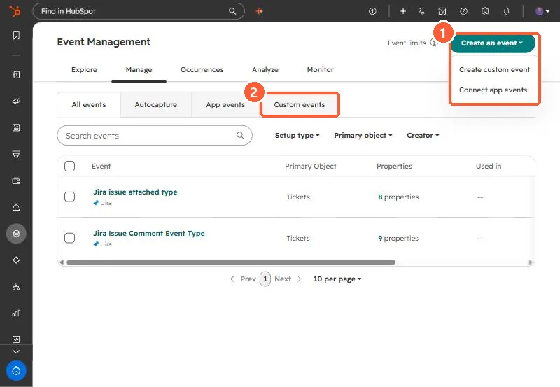

Short answer
My theme sends every link, button and form interaction to HubSpot with trackCustomBehavioralEvent when a custom event is configured, otherwise to trackEvent, and always to window.dataLayer. HubSpot's tracking code docs now say trackEvent has been deprecated and no longer works, so on a portal without custom events only the dataLayer path records anything. Custom events are created in Data Management > Event Management, and HubSpot's KB lists them on Professional and Enterprise subscriptions.
1. How the theme tracks
Every link, button, tab, card, logo and form in my theme is tracked without tagging. Each interaction goes to three places: HubSpot, window.dataLayer for Google Tag Manager or GA4, and a DOM event for anything else. The HubSpot call depends on whether a custom event is configured:
var _hsq = (window._hsq = window._hsq || []);
if (CFG.hsEvent) {
_hsq.push(["trackCustomBehavioralEvent", {
name: CFG.hsEvent, // the event's internal name
properties: { category: c, action: a, label: l }
}]);
} else {
_hsq.push(["trackEvent", { id: c + " " + a }]); // no longer works
}The event name lives in the template, not theme settings, because theme fields.json does not allow text fields.
2. The fallback is dead
HubSpot's tracking code docs say trackEvent has been deprecated and no longer works, and to use trackCustomBehavioralEvent instead. On a portal without a custom event set up, my theme's HubSpot path records nothing. The dataLayer path still works, so GA4 keeps the data. If HubSpot reporting matters, set up a custom event.
3. Create the custom event
- Go to Data Management > Event Management.
- Click Create an event, then Create custom event, then Code Javascript.
- Name it, choose the associated object, add properties, and copy the snippet's internal name into the theme.


4. Limits worth knowing
- HubSpot's KB lists custom events on Professional and Enterprise subscriptions. My own theme notes said Enterprise when I wrote them, so check what your account shows.
- Property names are limited to 50 characters, and one occurrence can carry up to 50 properties.
- Property internal names must start with a letter and use only lowercase letters, numbers and underscores.